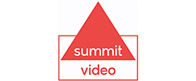
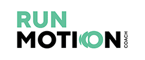
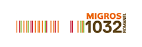
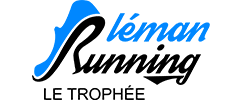
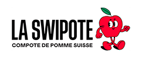
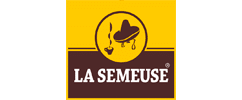

Concept non ufficiale · mockup volontarioConcept non ufficiale — mockup esplorativo a titolo volontario

Rendono possibile la corsa
Partner ufficiali del Lausanne Marathon, per livelli come sul sito ufficiale.
Photo : Lausanne Marathon
PRESENTING SPONSOR
PRESENTING SPONSOR Groupe Mutuel
Groupe MutuelPresenting sponsor ufficiale del Lausanne Marathon (sito ufficiale). Groupe Mutuel è il partner titolo dell’evento. groupemutuel.ch
SOUS LE PATRONAGE
SOUS LE PATRONAGE


LES COMMUNES PARTENAIRES
LES COMMUNES PARTENAIRES
SPONSORS PRINCIPAUX
SPONSORS PRINCIPAUX


SPONSORS
SPONSORS


PARTENAIRES ET FOURNISSEURS
PARTENAIRES ET FOURNISSEURSMövenpick
PowerBar
Plasmacom
 Perskindol
Perskindol
 Kambly
Kambly

Summit Video SILPerskindol

Run Motion
Migros 1032 Romanel En Mouvement
Léman Running Blanc Transports Amaudruz SAKambly

La Swipote Physio Clinics Skyphysio
La Semeuse SIGE Ducommun SOS Surveillance